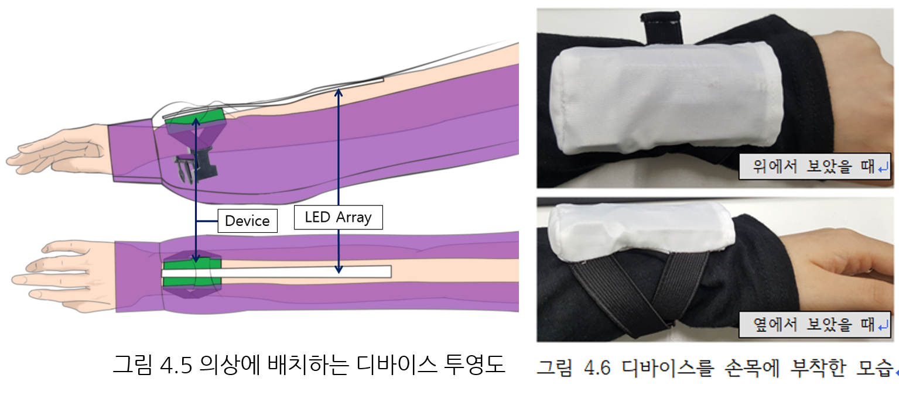

댄서의 군무에 활용 가능한 동작 인식 웨어러블 디바이스 개발
초록
최근 4차 산업혁명의 관심이 증가하면서 핵심 기술들의 관심이 증가하고 있다. 이에 따라 다양한 분야와 정보통신기술(Information & Communication Technology, ICT)의 융합에 관심과 연구가 증가하고 있다. 이러한 융합의 결과물 중 하나인 웨어러블 디바이스의 궁극적인 목표는 사용자가 거부감없이 신체 일부처럼 항상 착용하고 사용할 수 있고, 인간의 능력을 보완하거나 배가시키는 것이다. 기술이 발전해가면서 공연예술 분야 또한 발전하고 있다. 공연예술이 가지고 있는 미디어 인터랙티비티의 주요 특성 가운데 하나인 다른 장르, 다른 미디어의 인터페이스를 병합 및 응용해 온 것이다. 본 논문에서는 댄서들이 무대에 활용 가능한 동작 인식 웨어러블 디바이스를 개발하였다. 이에 동작 인식기술과 관련된 상보 필터, 칼만 필터, 쿼터니언을 살펴보고 실험하여 웨어러블 디바이스에 사용하기 적합한 필터를 선정하여 동작에 대한 실험을 진행하였다. 그리고 이를 이용하여 웨어러블 디바이스를 설계하고 제작하였다.
논문 보기